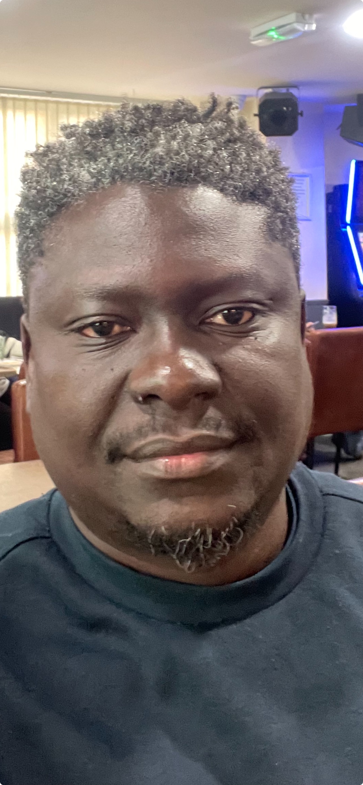

Summury

I am a qualified data entry personnel with nine years of experience working in the field of data,
information and client support.
I consistently deliver data and information within demanding time and cost constraints.
I confidently manage and mitigate risks and issues,
whilst maintaining progress in line with organizational goals and objectives.
Furthermore, I am able to work with minimum supervision and deliver within stipulated timelines.
I possess a strong ability to adapt to new systems as required and also a great team player.
Education
- Computer Netwoking Diploma - 2020
- Computer Technology Diploma - 2020
- Postgraduate Diploma in Management & Leadership - 2014
- Information Syatems & Programming Certificate - 2007
- General Certificate of Education - 1999
Work experience
Assitant Monitoring & Evaluation Officer - SPHO 2020 2023
Responsibilities:
- Welcoming guests and clients in a friendly and professional manner
- Attending to client inquiries and queries in person, via telephone and email
- Conduct general administrative duties, i.e printing, photocopying, scanning, scheduling of meetings and minute writing
- Directing clients to line managers for queries and inquiries that were more technical
- Scheduling clinical and pharmacy appointment visits for clients
- Calling clients to remind them of their next clinical and pharmacy visits
Skills
- Advanced use of SmartCare Plus.
Timely updated client information into the electronic health record system while ensuring accuracy,
completeness and integrity.
- Proficient use of MS office applications - Used excel for data entry and analysis,
word for report writing and power-point for data presentation and visualization.
- Advanced use of data management software - Used DHIS2,
a web-based software for health data management.
- Conflict resolution. Calmed irate clients and successfully managed to resolve majority of complaints.
Hobbies
Contact Details